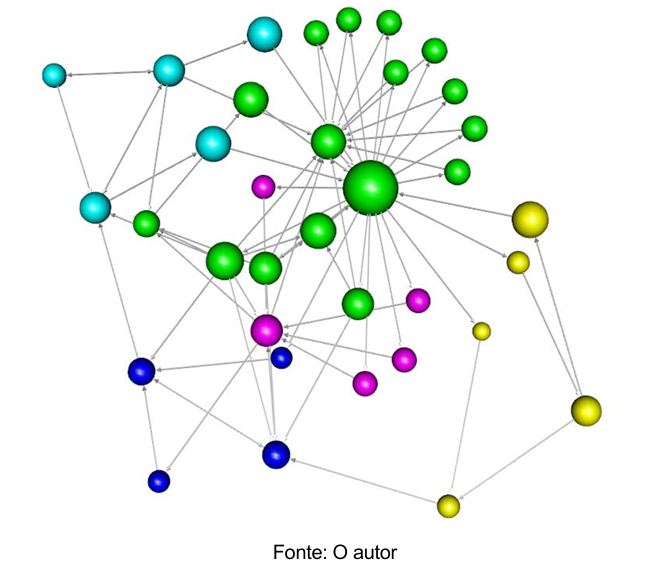

O objetivo principal deste estudo foi aprofundar os conhecimentos envolvidos em polarização dos macrófagos em suas duas variantes denominadas de M1 e M2, possuindo caráter inflamatório e de reconstrução respectivamente. Para realizar isso, foram construídas duas redes complexas de sinalização utilizando o conceito de grafo, definido formalmente no trabalho publicado por Euler em 1736, com uma considerada a rede base e a outra contendo os efetores PAMPS(Pathogen-associated molecular patterns). Utilizando o “Relative Mean Error” proposto por Miranda (2016) e o nocaute teórico de vértices e arestas, foram identificados as substâncias e células que mais apresentaram relevância no contexto analisado. Com isso nosso objetivo final foi verificar se as evidências disponíveis na literatura científica corroboram ou refutam os resultados obtidos, entendendo suas ações específicas no sistema imunológico, um entendimento fundamental para desenvolver diferentes abordagens em imunologia direcionadas a essas situações.
Grafo obtido na pesquisa
